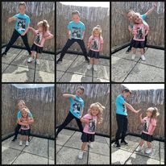

Mijn naam is Mortelé Yordi. Ik ben geboren op 17 september 1993 te Tielt.
Ik heb 2 kinderen. Mijn zoon Jaisy is geboren op 18 februari 2014 en mijn dochter Elora is geboren op 31 augustus 2019.
Hieronder een foto van mijn kindern.

Mijn ouders gingen uit elkaar toen ik 3 jaar was.
Daardoor heb ik langs mijn vaders kant 2 broers en langs mijn moeders kant 1 broer en 2 zussen.
Door de moeilijke jeugd die ik heb gehad heb ik beslist deze opleiding te volgen.
Zo hoop ik er voor te zorgen dat ik ander werk kan vinden en dat mijn kinderen een beter leven kunnen hebben.